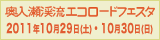

著作権について
当サイト及びサイトに掲載されている文章、写真、イラスト、画像等の著作権は、奥入瀬渓流利用適正化協議会、またはコンテンツ提供者の方にあります。
これらの情報は、「私的使用のための複製」や「引用」などの著作権法上認められた場合を除き、無断で転用・引用することはできません。また、引用を行う際は適宜の方法により、必ず出所を明示して下さい。当サイトの内容の全部、または一部について、当協議会に無断で改変を行うことはできません。
リンクについて
当サイトのトップページ（http://www.eco-oirase.com/）へのリンクは、原則として自由です。リンクの設定をされる際は、「奥入瀬渓流エコツーリズムプロジェクト」へのリンクである旨明示をお願いします。
なお、以下のことにご注意下さい。
・事前の連絡は必要ありませんが、トップページへのリンクを行った場合、doro@pref.aomori.lg.jpまでリンク元のＵＲＬをご連絡下さい。
・トップページ以外へリンクする場合は、事前にdoro@pref.aomori.lg.jp、またはリンクを希望するページのコンテンツ提供者等へメールでご連絡下さい。
※リンクの設定をされる際は、以下のバナーをご使用下さい。
▲88ｘ31px |
 ▲160ｘ40px |
▲230ｘ50px |
免責事項
当ホームページに掲載されている情報の正確さには万全を期していますが、奥入瀬渓流利用適正化協議会は利用者が当ホームページの情報を用いて行う一切の行為について、いかなる責任も負いません。
その他
当ホームページは予告なしに内容を変更又は削除する場合があります。あらかじめご了承下さい。